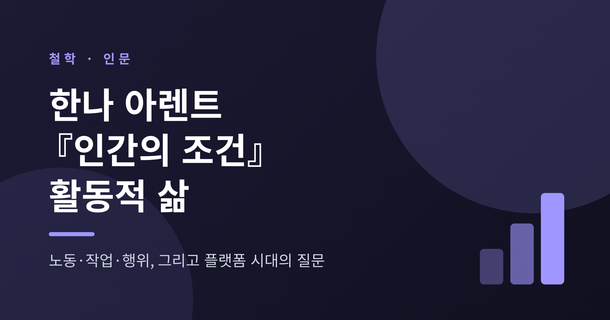
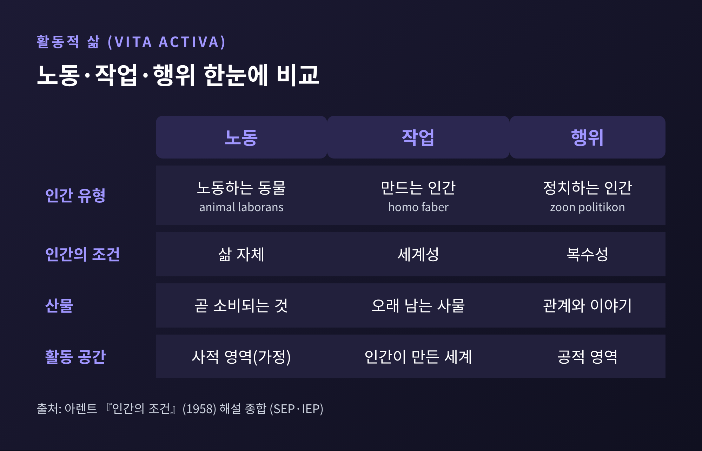
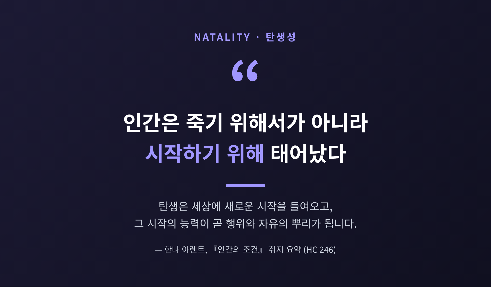
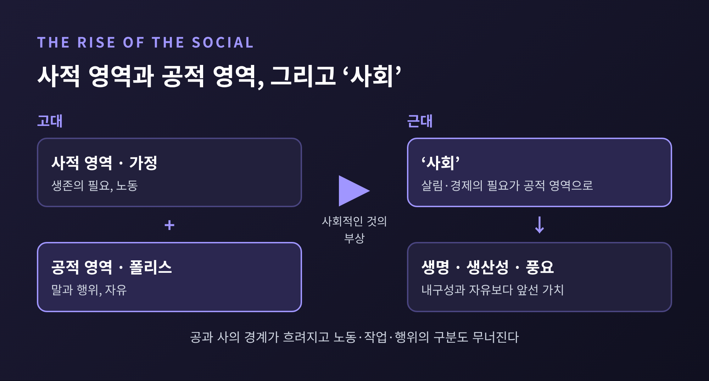
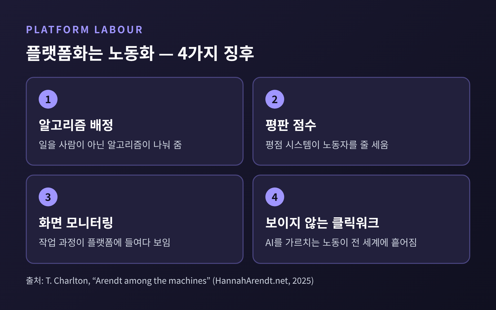
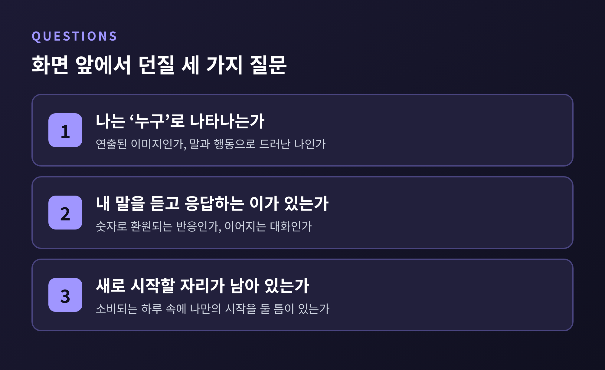

오늘은 한나 아렌트의 『인간의 조건』(1958)을 활동적 삶이라는 개념으로 정리해 보려 합니다.
아렌트는 인간의 활동을 노동·작업·행위 셋으로 나누었고, 이 구분은 플랫폼 노동과 SNS 공론을 읽는 데도 쓸모가 있습니다.
핵심만 먼저 말씀드리면 이렇습니다. 오늘의 우리는 하루 대부분을 '노동'으로 쓰고, 정작 '행위'를 할 자리는 좁아졌는가 하는 질문입니다.
『인간의 조건』은 1958년에 시카고대학교 출판부에서 나온 책입니다. 『전체주의의 기원』(1951) 다음에 나온 아렌트의 주저로 꼽힙니다. 1998년에는 마거릿 캐노번의 서문을 붙인 제2판이 나왔습니다. 국내에는 한길사에서 1996년에 번역본이 나왔고, 이진우 선생 등이 옮겼습니다.
흔히 아렌트 하면 '악의 평범성'을 떠올리시지만, 이 책의 관심은 다른 데 있습니다. 철학이 오랫동안 생각하는 삶, 곧 관조(vita contemplativa)를 높이고 행동하는 삶, 곧 활동적 삶(vita activa)을 낮춰 보았다는 문제의식입니다. 아렌트는 활동적 삶이 관조적 삶보다 우월하지도 열등하지도 않다고 보았습니다. 다만 활동적 삶 안에 무엇이 들어 있는지를 제대로 따져 보자고 청합니다.
아렌트는 활동적 삶을 세 가지로 나눕니다. 각각 인간이 처한 조건이 다릅니다.
노동(labor)은 생명을 유지하는 활동입니다. 먹고 치우고 다시 먹는 일입니다. 필요는 한 번에 영원히 채워지지 않기에 노동에는 끝이 없습니다. 산물은 곧 소비되고, 다시 만들어야 합니다. 이때의 인간을 아렌트는 '노동하는 동물'(animal laborans)이라 부릅니다.
작업(work)은 세계를 짓는 활동입니다. 집, 도구, 책, 제도처럼 만든 사람보다 오래 남는 사물을 만듭니다. 이 사물들이 모여 사람들이 함께 쓰는 '공동의 세계'가 됩니다. 건축가, 장인, 예술가, 입법자가 여기에 속합니다. 이때의 인간은 '만드는 인간'(homo faber)입니다. 다만 작업은 목적을 이루기 위한 수단이라는 틀 안에 있습니다. 그래서 최고의 자유는 아니라고 아렌트는 봅니다.
행위(action)는 말과 행동으로 자신이 '누구'인지 드러내는 활동입니다. 무엇을 할 줄 아는가가 아니라 누구인가를 보이는 일입니다. 노동에서는 모두의 '같음'만 드러나고, 작업의 산물은 만든 사람의 솜씨를 비출 뿐 그가 누구인지는 말해 주지 않습니다. 행위만이 한 사람의 고유함을 세상에 내놓습니다.

행위에는 반드시 다른 사람이 필요합니다. 아렌트는 이를 복수성(plurality)이라 부릅니다. 지구에 사는 것은 단수의 '인간'이 아니라 복수의 '인간들'이라는 사실입니다.
복수성에는 두 얼굴이 있습니다. 평등과 차이입니다. 서로 같은 존재이기에 이해할 수 있고, 서로 다르기에 드러낼 것이 생깁니다. 모두가 똑같다면 말할 이유가 없고, 완전히 다르다면 말이 통하지 않습니다.
이렇게 사람들이 함께 말하고 행동할 때 생기는 곳이 '나타남의 공간'입니다. 내게 타인이 나타나듯 타인에게 내가 나타나는 자리입니다. 한 가지 눈여겨볼 점이 있습니다. 이 공간은 건물처럼 한번 지어 두는 것이 아닙니다. 함께하는 활동이 멈추면 사라집니다. 그러니 계속 다시 만들어야 합니다.
고대 그리스의 폴리스는 이 구분이 비교적 선명했습니다. 가정(oikos)은 생존의 필요가 지배하는 사적 영역이고, 폴리스는 필요에서 풀려난 사람들이 '위대한 말과 위대한 행위'로 자신을 드러내는 공적 영역이었습니다. 물론 이 구도가 노예제 위에 서 있었다는 점은 기억해야 합니다. 아렌트도 노예제를 노동을 인간의 조건 밖으로 밀어내려는 시도로 읽었습니다.
아렌트가 행위의 뿌리로 지목한 것은 탄생성(natality)입니다. 인간은 태어남으로써 세상에 새로운 시작을 들여오는 존재라는 생각입니다. 아렌트는 어거스틴의 문장을 즐겨 인용했습니다. 시작이 있도록 인간이 창조되었다는 뜻입니다.
서양 철학이 대체로 죽음에서 출발했다면, 아렌트는 탄생에서 출발합니다. 인간은 죽기 위해서가 아니라 시작하기 위해 태어났다는 것입니다. 이 시작의 능력이 곧 자유이고, 믿음과 희망도 여기서 나온다고 보았습니다.

다만 행위에는 값이 따릅니다. 한 번 시작한 일은 되돌릴 수 없고, 어디로 번질지 예측할 수도 없습니다. 아렌트는 "행위에는 끝이 없다"고 썼습니다. 그 해법으로 용서와 약속을 꼽았습니다. 용서는 되돌릴 수 없는 과거를 풀어 주고, 약속은 예측할 수 없는 미래에 기둥을 세웁니다. 둘 다 혼자서는 할 수 없습니다. 복수성이 다시 등장하는 대목입니다.
예전엔 필요의 문제가 가정 안에 있었습니다. 지금은 그 문제가 사회 전체의 중심 의제입니다. 아렌트는 이 이동을 '사회적인 것의 부상'이라 불렀습니다. 가정의 살림살이가 공적 영역으로 올라오면서 공과 사의 경계가 흐려지고, 노동·작업·행위의 구분도 함께 무너졌다는 진단입니다.
그 결과 노동하는 동물이 '만드는 인간'과 정치하는 인간을 이깁니다. 내구성과 자유보다 생명, 생산성, 풍요가 앞서게 됩니다. 아렌트는 근대인을 '노동자와 직업 보유자의 사회'로 묘사했습니다. 산업화는 작업을 노동으로 바꾸어 놓았고, 사물은 오래 쓸 대상이 아니라 소비되는 노동 생산물이 되었습니다.
더 곱씹을 대목은 이것입니다. 노동에서 풀려난 시간이 저절로 더 높은 활동을 낳으리라는 기대를 아렌트는 '환상'이라 했습니다. 일에서 해방될 참인 사회가, 정작 그 자유를 무엇에 쓸지 모른다는 경고입니다.
원인을 두고는 설명이 갈립니다. 어떤 해설은 생명을 중시한 기독교 전통이 세속화된 결과로 보고, 스탠퍼드 철학 백과는 18세기 후반 이후 경제의 팽창과 이어 설명합니다. 두 설명을 함께 알아 두시면 좋겠습니다.

이 틀을 오늘의 플랫폼에 대 보겠습니다. 케임브리지대 연구자 티모시 찰턴은 2025년 논문에서 아렌트의 삼분법으로 디지털 플랫폼을 분석했습니다. 여기서 소개하는 내용은 그 논문의 한 가지 해석이라는 점을 밝혀 둡니다.
찰턴은 프리랜서 중개 플랫폼 업워크(Upwork)를 사례로 듭니다. 알고리즘이 일을 배분하고, 평판 시스템이 점수를 매기고, 화면 감시가 작업 과정을 들여다봅니다. 노동자는 일 자체보다 알고리즘을 공략하는 데 힘을 쏟게 되고, 플랫폼은 준국가적 권력을 행사한다고 합니다. 그래서 그는 '긱 워크'보다 '긱 노동(gig labour)'이 현실을 더 잘 설명한다고 결론 내립니다.
또 하나는 클릭워크입니다. 이미지에 이름표를 붙이고 유해 콘텐츠를 걸러내는 일처럼, 인공지능을 가르치는 사람의 노동이 전 세계에 흩어져 눈에 띄지 않게 이루어집니다. 아렌트는 자동화가 노동을 없애리라 내다보았지만, 찰턴이 보기에 플랫폼은 오히려 노동의 범위와 지리를 넓혔습니다. '플랫폼화는 노동화'라는 표현이 그래서 나옵니다.

한계도 있습니다. 찰턴 스스로 아렌트의 기술론이 체계적이지 않고 자신의 독해가 선택적임을 인정합니다. 또한 아렌트의 공과 사 구분이 경제적 비대칭과 착취를 가린다는 비판도 있습니다. 이 틀이 만능은 아니라는 뜻입니다.
SNS는 어떨까요. 학자들의 견해가 한 방향으로 모이지 않습니다.
한스 테어즈는 행위와 상호작용을 구분합니다. 행위는 행위자가 보이고 응답받는 일이라 장소에 닿아 있다는 것입니다. 편지와 카페의 대화, 댓글과 얼굴을 맞댄 대화가 다르다는 설명입니다. 그는 "행위에는 실제 무대가 필요하고, 상호작용은 가상 무대로 충분하다"고 말합니다.
바네사 오시노는 2022년 논문에서 조금 다르게 봅니다. 소셜미디어가 원칙적으로는 복수적인 나타남의 공간을 품을 수 있다고 합니다. 다만 실제 이용 방식과 기술 구조가 '누구'의 출현을 흐린다고 지적합니다. 자기 연출이 강해지고 익명성의 위험이 늘 따라붙기 때문입니다. 이 논문은 독일어이고 저는 초록을 확인했습니다. 세부 논증은 직접 읽어 보시길 권합니다.
두 견해를 겹쳐 보면 질문이 선명해집니다. 화면 속에서 우리는 '누구'로 나타나고 있는가. 조회수와 반응은 나를 드러내는가, 같음의 숫자로 환원하는가. 그리고 말이 이어질 이야기와 듣는 이는 남아 있는가.

정리하면 이렇습니다. 노동은 삶을 지키고, 작업은 세계를 짓고, 행위는 사람을 드러냅니다. 셋 중 무엇이 빠져도 삶은 온전하지 않습니다. 다만 오늘의 위험은 노동이 다른 둘을 삼키는 쪽에 있습니다.
그렇다고 일을 멀리하라는 이야기는 아닙니다. 노동은 아렌트에게도 삶의 조건이었습니다. 다만 하루 가운데 '누구인지 드러내는 시간'이 얼마나 되는지는 한 번 헤아려 볼 만합니다. 작은 모임, 오래 남을 글 한 편, 믿을 만한 사람과 나누는 약속도 그 후보입니다.
"인간은 시작하기 위해 태어났다." 아렌트가 남긴 이 한 문장이 결국 남는 것입니다.
내일 아침, 알림이 아니라 누군가에게 건넬 첫마디로 하루를 시작해 보시면 어떨까요.